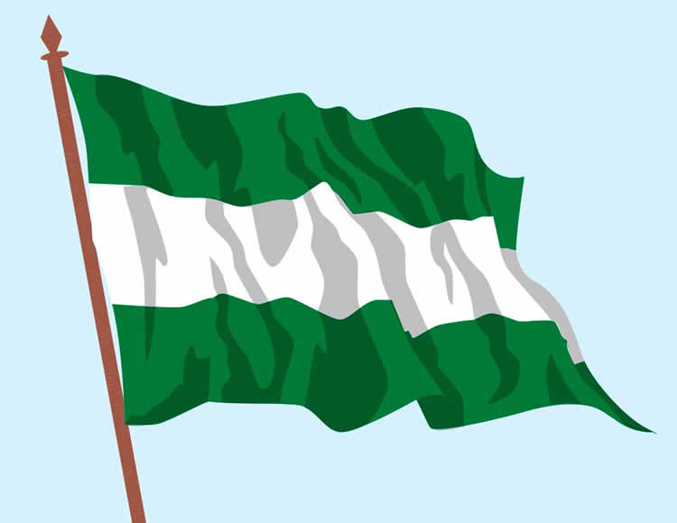
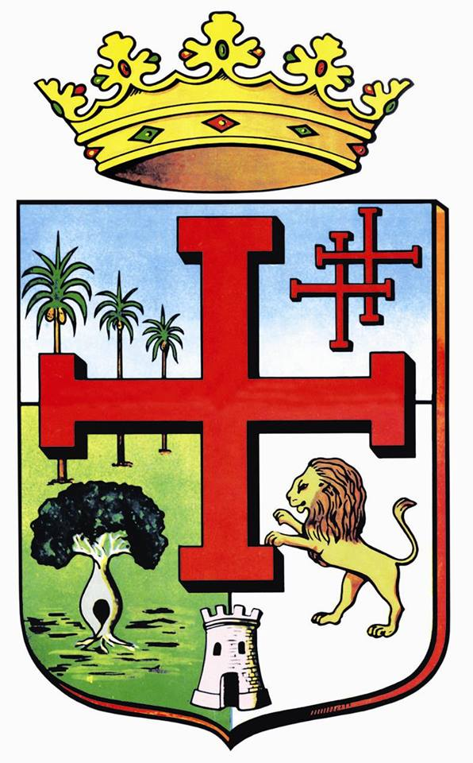

|  | La fiesta de la Virgen de Cotoca es una celebración religiosa que se lleva a cabo el 8 de diciembre. Es una de las más importantes y concurridas del país. | Y surgió en su sombra un pueblo eminente de límpida frente de leal corazón. |
|---|---|---|
| El Carnaval cruceño es uno de los más coloridos y alegres de Bolivia, se celebra en febrero y se caracteriza por sus bailes, música y disfraces. | Bajo el cielo más puro de América y en la tierra de Ñuflo de Chávez, libertad van trinando las aves de su veste ostentando el primor. | El Velorio de los Reyes es una tradición que se celebra en enero, donde se preparan altares y se ofrecen comidas a los asistentes. |
| De las flores del mundo galano su ambrosía perfumada ofreciendo libertad, libertad van diciendo en efluvios de paz y de amor. | La Feria Exposición Agropecuaria (EXPOCRUZ) se realiza en septiembre y es la principal feria de la región, donde se exponen productos y servicios relacionados con la agroindustria y la tecnología. |  |